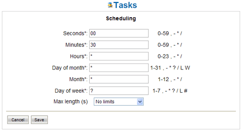

Scheduled Tasks |
In LogicalDOC there are processes which are performed during normal execution of the program without the intervention of user. These processes are scheduled tasks since you can schedule their execution.
The section Tasks allows you to schedule the execution of these
processes.
List of scheduled tasks
Picture 55: List of scheduled tasks
The list of scheduled tasks shows all transactions recorded in the system and each of them show:
-
Name of the task
-
Last moment of execution
-
Moment of the next execution
-
Indication of scheduling policy (clickable for editing)
-
Enabled/disabled flag (clickable to change)
-
Progress indicator (clickable for execution)
-
Link to access the specific operation log
Each scheduled task can be enabled or disabled. The task can be performed only if it is enabled.
Scheduling
Although the scheduled tasks can be launched whenever you wish,
but as the name suggests, they are generally performed on a time
schedule.
You can plan the execution of the task by clicking on the link column
Scheduling.

Picture 56: Mask scheduling
The execution planning is done by the specification of 6 fields (as in the Unix cron command) listed below::
| Field name | Admitted values | Special characters |
|---|---|---|
| Second | 0-59 | , - * / |
| Minute | 0-59 | , - * / |
| Hour | 0-23 | , - * / |
| Day of the month | 1-31 | , - * ? / L W |
| Month | 1-12 | , - * / |
| Day of the week | 1-7 (1=Sunday) | , - * ? / L # |
Special configurable characters take the following meanings. The character '?' is allowed on the day of the month and day of the week. It is used to define any specific day.
The character '*' is used to specify all the values. For example '*' in the minutes indicates "every minute".
The character ',' is used to specify additional values. For example 2,4,6 on the day of the week indicates "the day Monday, Wednesday and Friday."
The character '/' is used to specify increments. For example'0/15' in the second indicates "the second 0, 15, 30 and 45" and "5/15" in the same field shows "the second 5, 20, 35 and 50".
The 'L' is allowed for the day of the month and day of the week. This character has a different meaning for the two fields. On the day of the month indicates the last day of the month (January 31, February 28 ...).
When used in the days of the week, indicates the last day of the month xx such as "6L" means "the last Friday of the month."
The 'W' is allowed for the day of the week. It is used to specify the working day(Monday, Friday) closer to the specified day. For example, if you specify "15W" as a day of the month means "the working day closest to 15 of the month." So if 15 is Saturday, will be
took Friday 15. If the 15 is Sunday, then will be Monday 16. If the 15 is on Tuesday, will be 15 on Tuesday.
The characters' L 'and' W 'may be combined in the days of the month and indicate the last working day of the month.
The character '#' is allowed for the day of the week. This character is used to specify the "#th day of the month." For example, the value "6#3" indicates the 3 rd Friday of the month.
In addition to the descriptive parameters of planning, you can set the specific maximum duration of processing. If this is specified, the procedure will be automatically stopped after the configured time.
Progress status and log
If a task is running you can see it in column Execution and the progression bar will be updated constantly showing the percentage of progress.
At the side of this bar an animated icon indicates that the process is running.
This icon is clickable and allows you to stop the execution.
When the task is not running, the same icon appears motionless and and by
clicking on it you can start the execution.
Each task has also a related log file that can be inspected by clicking on the link Log.
This log details how the activity proceeds.
| Not all tasks are able to provide the stage of processing. In such cases, the progression bar does not indicate the progression rate and remains undetermined. | |